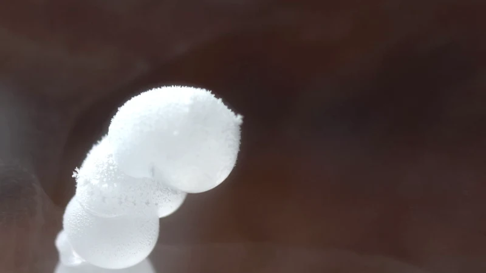
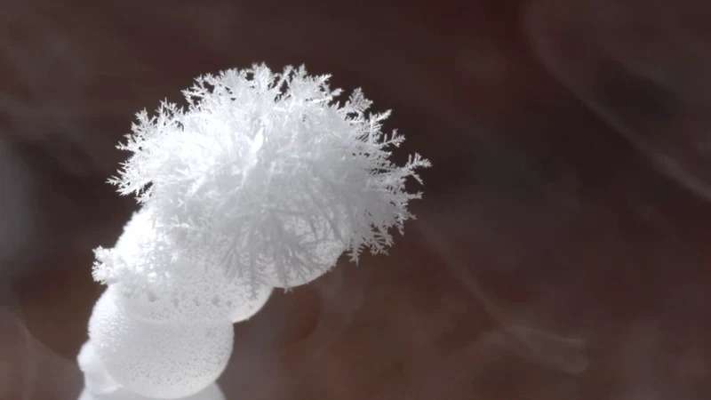
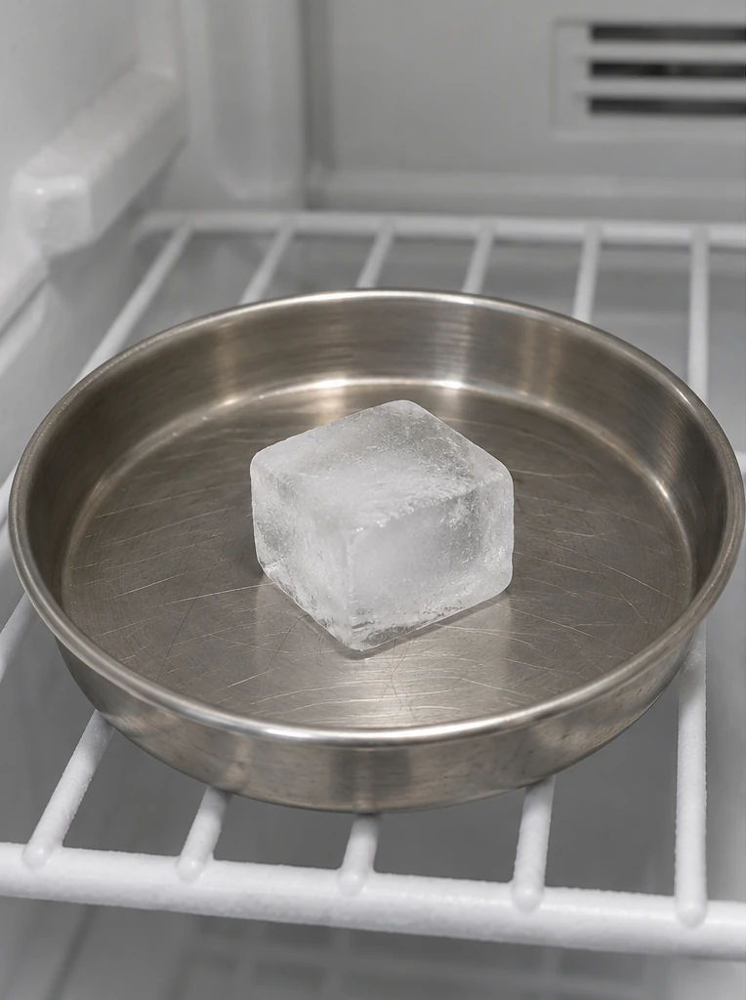
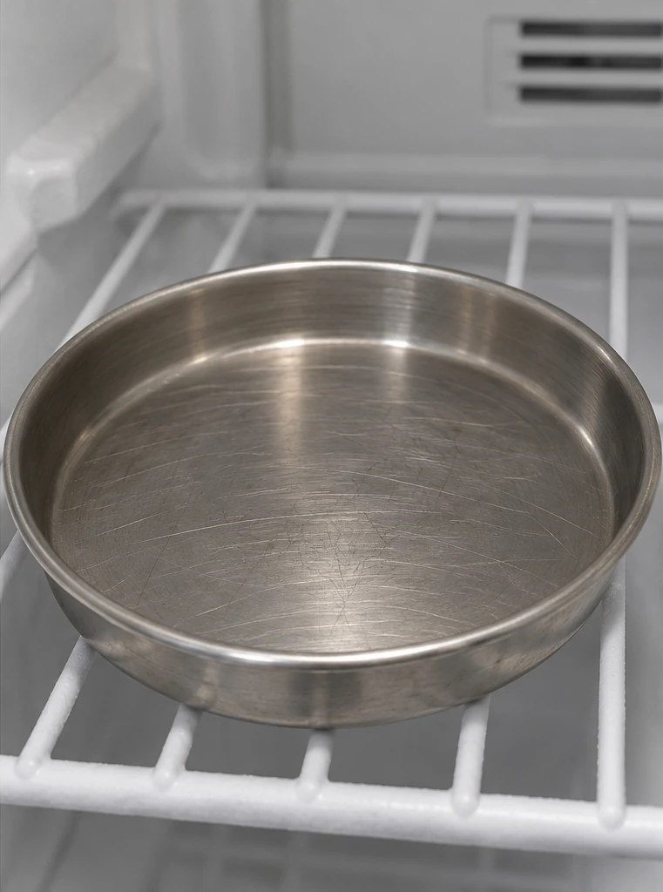

融化：寫實示意圖
AI生成的融化前後寫實示意，不是實拍照片或實驗紀錄。固定透明短杯、角度、背景與光線，呈現一塊冰吸熱融化成杯中液態水；冰與水的份量為合理示意設計，非量測值。
製作工具：OpenAI圖像生成。使用者已核可原圖；只拆分左右兩欄、去除中央留白並轉存WebP，未重繪核可內容。


融化、凝固與汽化三組使用AI生成的寫實示意圖，不是真實拍攝或實驗紀錄。其餘三組目前保留既有實拍素材：凝結組兩張分別取材，其餘各組各自取自同一份實拍紀錄。影片僅擷取靜態影格，頁面不播放。不同組的拍攝尺度、環境與經過時間不同；照片不與上方粒子模型同步，也不是學生量測結果。
AI生成的融化前後寫實示意，不是實拍照片或實驗紀錄。固定透明短杯、角度、背景與光線，呈現一塊冰吸熱融化成杯中液態水；冰與水的份量為合理示意設計，非量測值。
製作工具：OpenAI圖像生成。使用者已核可原圖；只拆分左右兩欄、去除中央留白並轉存WebP，未重繪核可內容。
AI生成的凝固前後寫實示意，不是實拍照片或實驗紀錄。固定透明短杯、角度、背景與光線，呈現液態水放熱後凝固，形成符合杯內形狀的固態冰。液面略低於冰面，前後份量為合理示意設計，非量測值。
製作工具：OpenAI圖像生成。使用者已核可最後修正版；只拆分左右兩欄、去除中央留白並轉存WebP，未重繪核可內容。


AI生成的地磚積水蒸發前後寫實示意，不是實拍照片或實驗紀錄。固定不吸水地磚的紋路、角度與光線，呈現清水蒸發後同處表面變乾；水變成看不見的水蒸氣進入空氣，不用白霧代表氣態水。
製作工具：OpenAI圖像生成。使用者已核可地磚積水版；只拆分左右兩欄、去除中央留白並轉存WebP，未重繪核可內容。


清晨草葉表面較冷，空氣中的水蒸氣遇冷凝結，形成小露珠。兩張照片分別取材，作凝結前後示意，不是同一片草葉的連拍紀錄。
變化前作者：Alberta Studios · Green Grass in Close Up Photography
變化後作者：Devyn Breslin · Grass in Dew
兩張皆依 Pexels License 使用；僅等比例縮小並轉存 WebP，無生成、重繪或合成。


低溫實驗紀錄的後段；冰珠表面逐漸長出霜晶。背景霧不是可見的水蒸氣，不用霧判斷物態。
作者：Maxim Bilovitskiy
原始實拍紀錄：Frozen drop.webm · CC BY 4.0
從同一實拍影片擷取兩個指定時刻；等比例縮小並轉存 WebP，無重繪、生成或合成。


變化前：影片位置 15 秒；變化後：影片位置 30 秒
NASA鳳凰號於火星拍攝，2008年6月15日與19日的同一處水冰小塊；環境與地球冷凍庫不同，不是冰融化成水的照片。
作者：NASA/JPL
原始實拍紀錄：Evaporating ice on Mars Phoenix lander image.jpg · Public domain
分別裁出 NASA 原始前後圖中同一處的實拍放大區，去除版面邊框；無生成、補畫或重建。


變化前：2008-06-15；變化後：2008-06-19
實拍影格及其 WebP 衍生照片依各原始作品授權提供；AI寫實示意圖的製作方式另於該組註明。NASA 照片不表示 NASA 支持本教材。